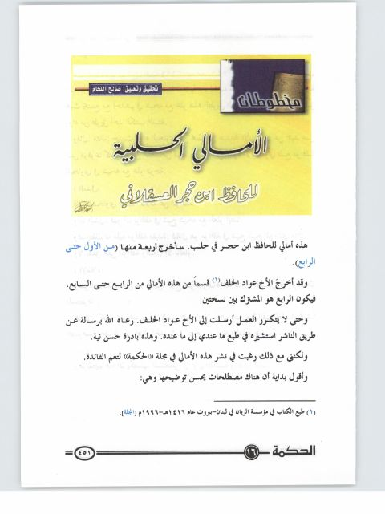

Downloads need an internet connection.
الأمالي الحلبية- ت. اللحام
Authors: أحمد بن علي بن حجر العسقلاني
Editors: صالح اللحام
Publishers: مجلة الحكمة
**▫️ العنوان: الأمالي الحلبية- ت. اللحام** ▪️ المؤلف: #أحمد_بن_علي_بن_حجر_العسقلاني ▫️ المحقق: #صالح_اللحام ▪️ الناشر: #مجلة_الحكمة ▫️ بلد النشر: مانشستر، #بريطانيا ▪️ الطبعة: ع 16 ▫️ عدد الأجزاء: 1 ▪️ الصفحات: 27 ▫️ نوع الوعاء: #بحث ▪️ التصنيف الرئيسي: #الحديث_وعلومه ▫️ التصنيف الفرعي: #الأجزاء ۪